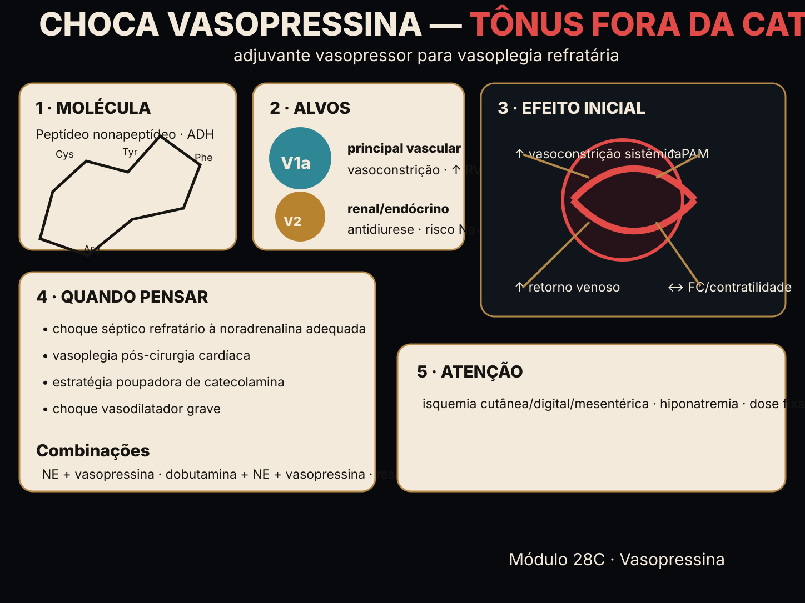

A vasopressina sobe a RVS por V1 — não por adrenérgico. Por isso é poupadora de catecolamina, não taquicardiza e não tem custo β (metabólico/arritmia). E sua dose é fixa (U/min), não por peso. V1 → RVS sem β dose fixa

Vá ao Contraste: vasopressina × noradrenalina, termo a termo.
| propriedade | vasopressina (V1) | noradrenalina (α1) |
|---|
Entram em iteração futura, sempre com o enquadramento de papel (rotina / UTI sofisticada / excepcional-resgate) e sob o SAFETY.md §11.
Material educacional · não é suporte à decisão. O contraste é de mecanismo (via e termos). Nunca exibe dose, titulação ou conduta para um paciente real.
→ "Dose fixa" e "por peso" descrevem a referência educacional da aritmética (a calculadora vive no hub, M28,
sob o SAFETY.md §11); o peso é hipotético. → Os termos (RVS, FC, custo β) são exatos no modelo; a magnitude é didática. → O risco
de isquemia por vasoconstrição é apresentado como mecanismo/efeito iatrogênico, não como alerta de prescrição individual. → Confira o protocolo da sua instituição.